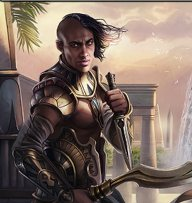

Lieux
🗺 Ouvrir la carte du Vieux Royaume
 Le Vieux Royaume
Le Vieux Royaume Le château de Garches
Le château de Garches Les Landes Grises
Les Landes Grises La fête des Mille Merveilles
La fête des Mille Merveilles- Ciudalia
 Le volcan Kiriadum
Le volcan Kiriadum Bourg-Preux
Bourg-Preux L'île de Thalassyr
L'île de Thalassyr- Le duché de Bromaël
 Chrysophée
Chrysophée- Aeyellessee
- Malvern (ruines)
- La Marche Franche
- Le royaume de Ressine

L'Ouromagne- La Listrelle
- Les Cinq Vallées
- Le royaume de Kahad-Burg
 Le château de Canderas (duché de Bromaël)
Le château de Canderas (duché de Bromaël)- Rourika
- La Rivière Sèche
- Roche-Brisée (les Roches Brisées)
- Kaellsbruck
- La citadelle de Sacralia
 La grotte au trésor
La grotte au trésor- La lande de Dunsynal
- La plaine de Funaria
- Le Canton Vert
- Le Cœur du Royaume
- Le Mons Dolorossus
- Le lac de Croquerive
- Transborée
- La forêt du Fauvois
- Les steppes de Féménie
- Valanael, la Vallée aux cascades